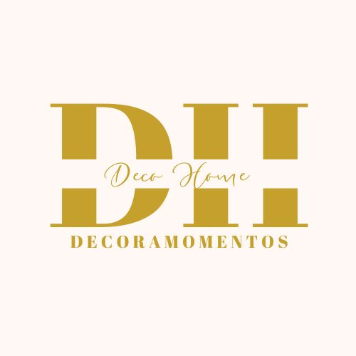

SERVICIOS
◄ Proceso del Diseño ►
- Solicitud del cliente via mail. El primer contacto con el cliente siempre es digital.
- Reunión con cliente.
- Diseño de interiores
- Presupuesto ajustado a la realidad.
- Fecha de montaje.
- Compras.
- Dia de montaje./li>
- Entrega.
- Publicacion en el blog del decorador.
| Nórdico | El origen de este tipo de decoración se encuentra en Noruega, Suecia, Finlandia y Dinamarca, donde los días soleados escasean gran parte del año, por lo que se buscó la manera de sustituir esa falta de luz. | Se utilizan colores claros y elementos relacionados con la naturaleza. | Predominan los muebles o elementos de madera en medio de muros grises claros, además de plantas verdes y figuras geométricas. |
|---|---|---|---|
| Minimalista | Si el orden es algo que rige tu vida, el minimalismo es para ti. Los espacios que se crean en este estilo son simples y serenos. | Predominan las superficies lisas, el vidrio o semejantes al ébano, Las maderas brillantes o elementos de contraste con elementos en negro. | “Menos es más” |
| Rústico | La intención de este estilo es traer la naturaleza al interior para crear casas rurales que transmitan armonía, bienestar y confort. Si la casa tiene elementos antiguos, es importante mantener ese carácter. | Son espacios principalmente frescos con elementos cálidos. | Los elementos imprescindibles son: madera, piedra, barro, mimbre y cerámica. |
| Clásico moderno o ecléctico | Combina elementos de dos tipos de decoración. | Se mantienen las formas clásicas, como las molduras en las muebles y paredes, pero se combina con una decoración de elementos lisos, como los que aporta la piedra y el mármol. | El resultado es un aspecto elegante, lujoso y sofisticado, donde predominan los colores blancos y cremas. |
| Industrial | También conocido como urbano, se inspira en un almacén o en un loft de las grandes ciudades como New York City. | Los muebles que se utilizan son de metal o hierro, incluso se dejan ver con un poco de óxido en ellos. También se usan maderas sin tratar y chapas. No pueden faltar uno o dos piezas decorativas como cuadros o fotografías para agregar un toque de color a un ambiente con colores opacos o pálidos. | El color gris es uno de los favoritos para esta decoración. Para contrarrestar la frialdad o tonos oscuros, una gran entrada de luz natural es necesaria. |
| Romántico | Predominan los colores rosas y las flores para crear espacios delicados y suaves. | Su origen se remonta a la ópera del siglo XIX, con grandes columnas del neobarroco y los palacios con grandes vestíbulos y salones. | La madera es esencial en este tipo de decoración, pero siempre en tonos claros o pintada en blanco. Flores, velas aromáticas, libreros, son elementos que no fallan en estos espacios de colores pastel, como el lila, amarillo o verde. |
| Art Deco | Una de las corrientes de interiorismo más importantes del siglo XX, es el Art Deco, un símbolo del glamour y la sofisticación, inspirados en los años veinte. | Dentro de sus características fundamentales está la tendencia hacia las líneas geométricas, en particular las rectilíneas y las paletas monocromáticas, es decir, elegir un color y utilizar las tonalidades de este. La clave está en el contraste entre colores claros y oscuros o brillantes, como el rojo, azul o amarillo. | Nunca faltan elementos como estampados geométricos en colores brillantes, lo que resulta en espacios cargados de adornos, modernos, que evocan un glamour extravagante. |
| Náutico | Predominan los colores frescos y todo lo relacionado con el mar. Las casas en playas del Caribe y América Latina son la principal fuente de inspiración. | Como colores indispensables están el azul marino, azul rey y el blanco. Detalles en rojo o dorado, nunca fallan para este tipo de decoración. | Los muebles rústicos de madera tampoco pueden faltar, así como elementos decorativos que evoquen la vida en la playa. Mientras que en los cojines, cortinas y demás textiles predominen las rayas gruesas con azul o rojo. |
| Oriental | Influenciados por el Feng Shui, el equilibrio es la clave en este tipo de decoración que se ha extendido por todo el mundo, con la idea de concebir los espacios como una extensión de nuestra mente, por lo que se busca crear atmósferas de paz y en equilibrio. | Tradicionalmente los materiales predominantes son bambú, piedra, papel de arroz, madera de cedro y la seda. Los colores de estos elementos se contrastan con los muros, que en la mayoría de los casos son blancos o de tonos claros, como el beige. | Pueden encontrar muchas similitudes con el minimalismo, pero en este estilo suele haber un poco más de elementos decorativos o plantas que sumen tranquilidad y equilibrio a la atmósfera. |